Rasmlar
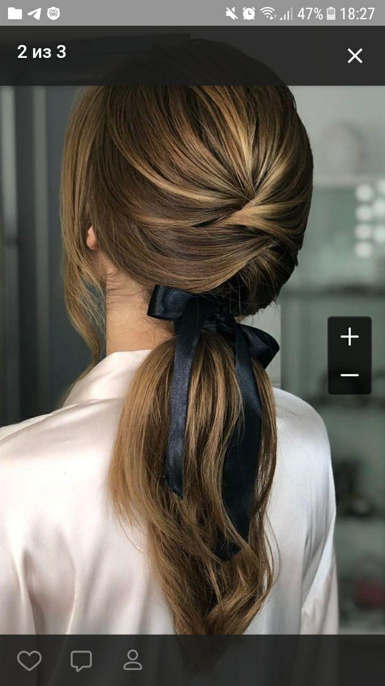
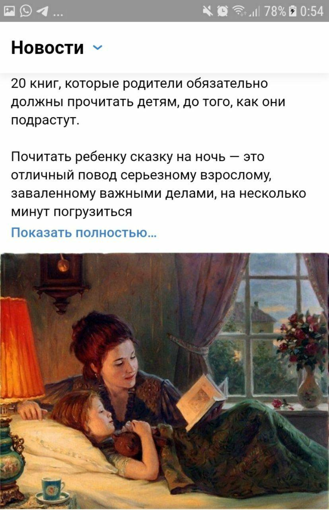
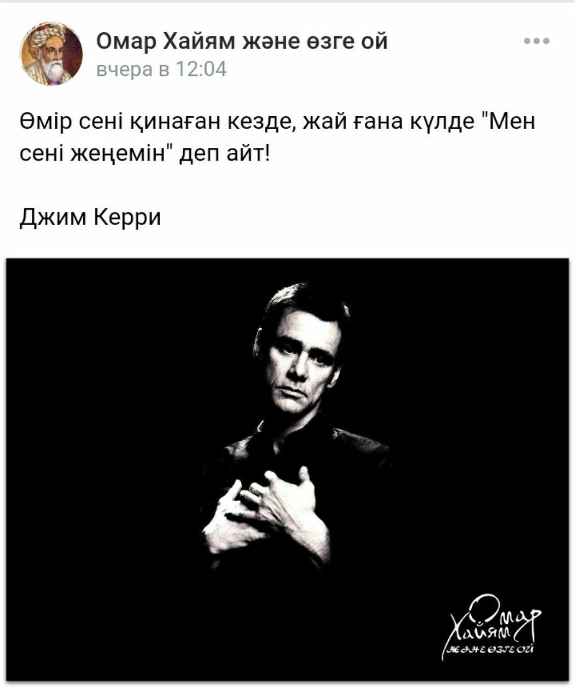
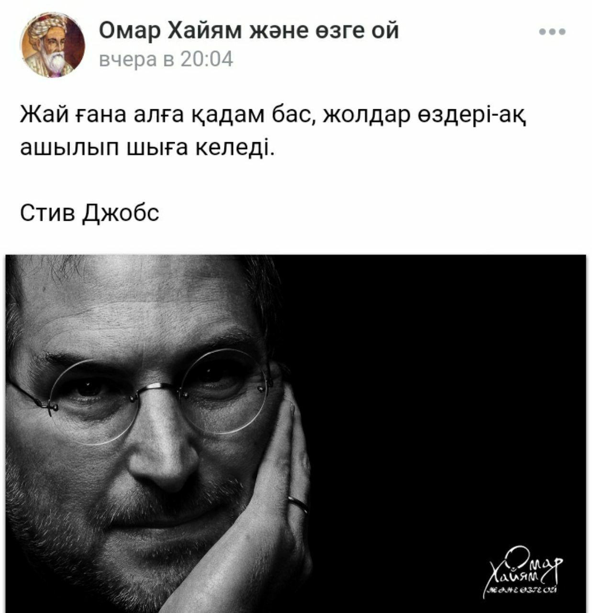
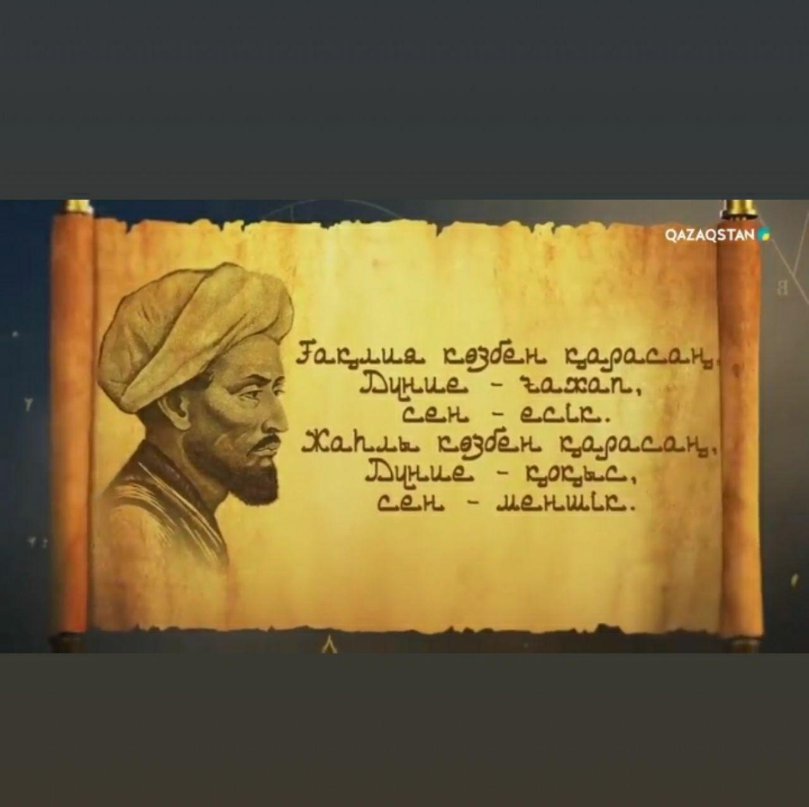
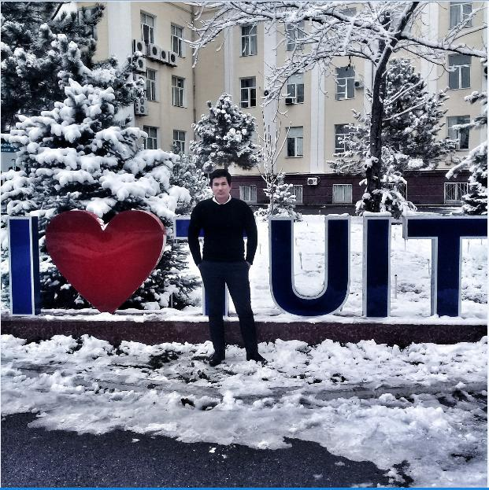
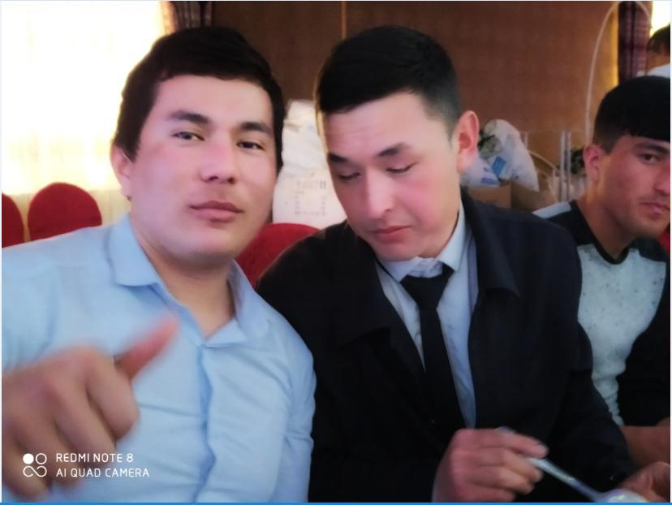
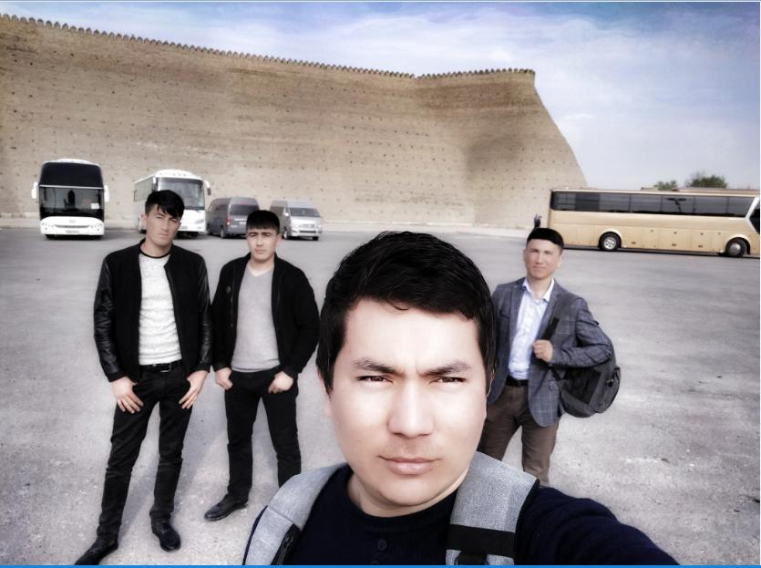
 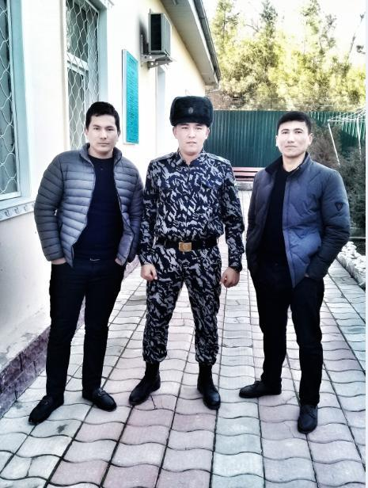
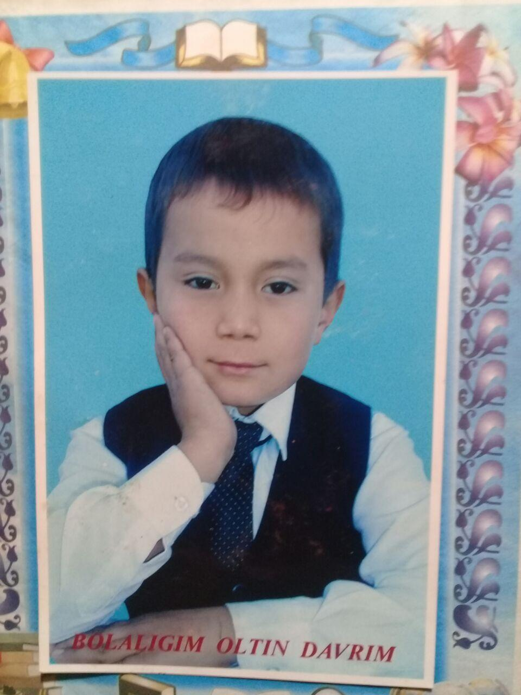
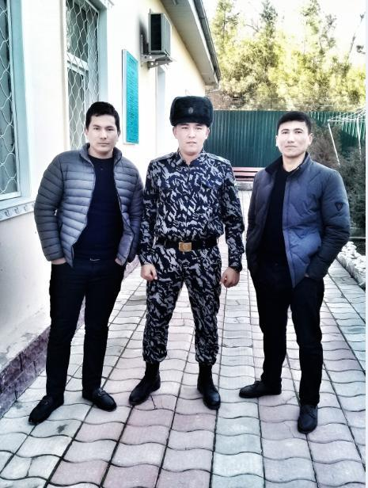
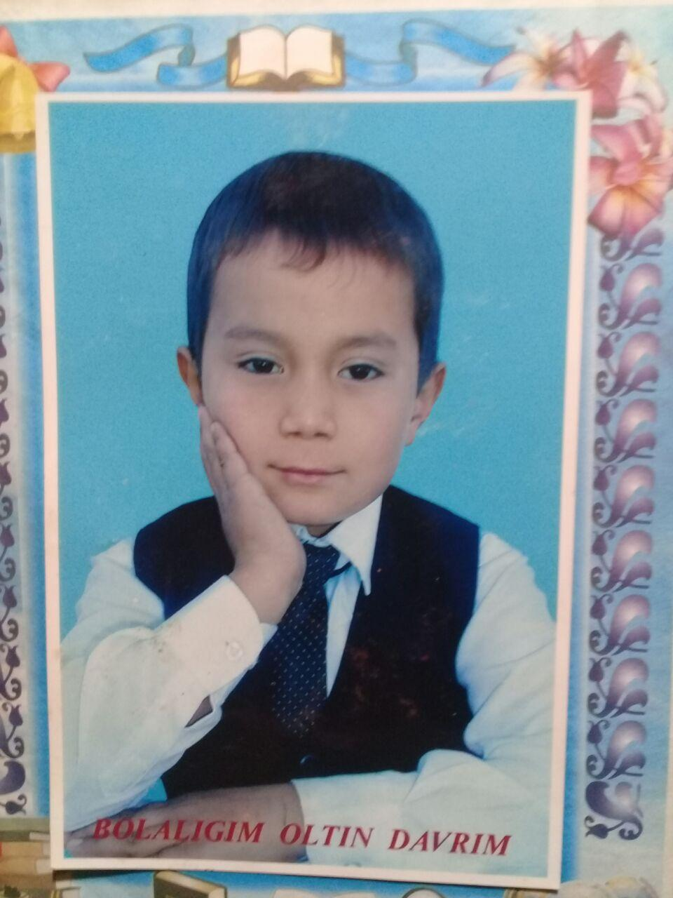
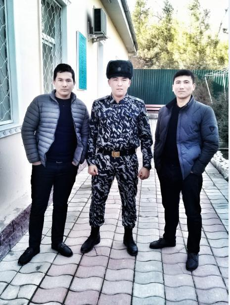
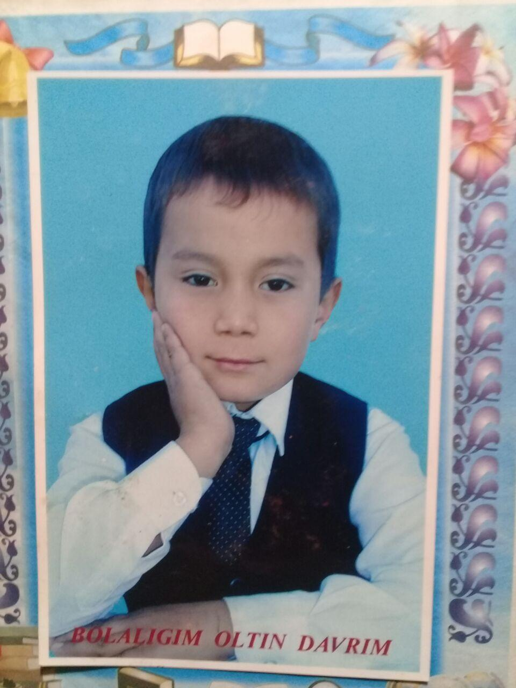
Mayli-da, kimgadir, yoqsa, yoqmasa, Ularga qo‘shilib yig‘lasharmidik. Biz baxtli bo‘lamiz xudo xohlasa, Xudo xohlamasa, uchrasharmidik… Rayhon hidlaringni yo‘llarimga sep, Kut meni, har oqshom, ko‘kka oy chiqqan. Faqat, yig‘lamagin, gunohim ne deb, Aybing –Onang seni chiroyli tuqqan!.. Menga bir tabassum hadya et, ey yor, Nur tomsin lablaring sohillaridan. O‘zing ayt, senday qiz yana qayda bor, Kipriklari uzun – Kokillaridan?.. Iymanib yashama xayol pinjida, Yoyil, yayra jonim, o‘rtanma g‘amda. G‘iybatlarga chida, tuxmatga chida, Sen bittasan, axir yorug’ olamda. Men esa oshig‘ing sening – Eng g‘arib. Tundan so‘z qarz olib tongga tutguvchi. Sening yoningda ham seni axtarib, Sening yoningda ham seni kutguvchi. Ista... tiz cho‘kaman hozir oldingda, Sevdim...sevganimdan uyalmoq nechun. Barcha farishtalar sening qalbingda Ijarada turgan qizlar men uchun... Biz baxtli bo‘lamiz xudo xohlasa, Xudo xohlamasa uchrasharmidik...
Ko'p narsa kerakmas AYOL zotiga. Menimcha bir tomchi mexr bo'lsa bas. Nur bo'lsa qorong'u hayolotiga. Menimcha boshqasi unga kerakmas. Tilloga to'ldirmang barmoqlarini. Baxtli bo'lish gumon boylikdan butkul. Menimcha chog' etib dimog'larini. Tonglari yostig'iga qöying atirgul. Ishoning ko'p narsa kerakmas unga. Unutmang shishadan yasalgan ko'ngil. Bazida bir kulib qarashingizga. Jonini bermasa mana men kafil. Kimgadir kerakman deya yashasin. Asrang qadrsizlik qiynoqlaridan. Savob yozilarmish har bo'sa uchun. Sizni duo qilgan dudoqlaridan !!!
Agar daryoni o'rtasida bo'lsangda yoningda 2 ta qayiq bo'lsa va sen har ikkala qayiqni ham ushlasang, qayiqlar ikki tarafga suzib ketadi va sen cho'kib xalok bo'lasan.
Agar daryoni o'rtasida bo'lsangda yoningda 2 ta qayiq bo'lsa va sen har ikkala qayiqni ham ushlashing kerak. Sababi: qayiqlarni biri daryoga g'arq bo'lsa sen boshqasiga chiqb omon qolishing mumkin.
Insonni faqat yaxshi taraflarini ko'rishing zarur shunda hayot ham g'ozal bo'ladi.
Qiz bolani baxti uyda o'g'il bolaniki esa ko'chada bo'larkan.
Inson ikkta narsada adshmasligi kerak: birinchisi o'z kasbini tanlashda. ikkinchisini har doim yonida bo'ladigan insonini tanlashda.
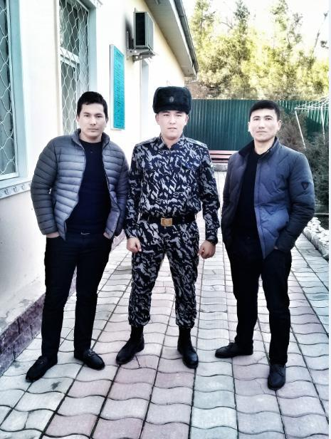
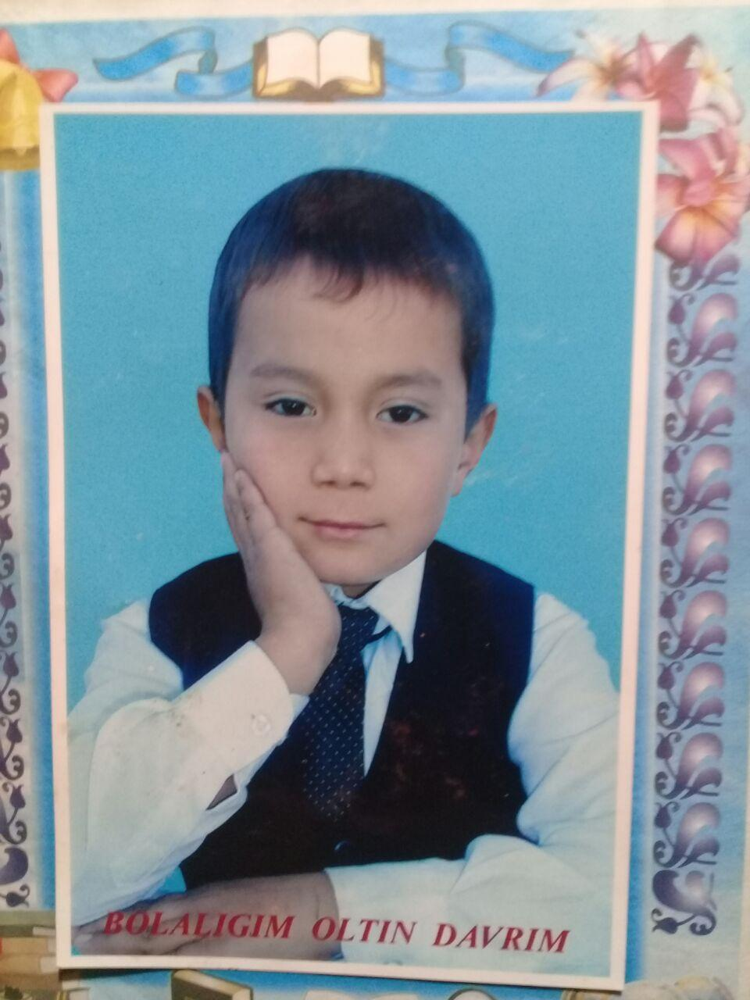